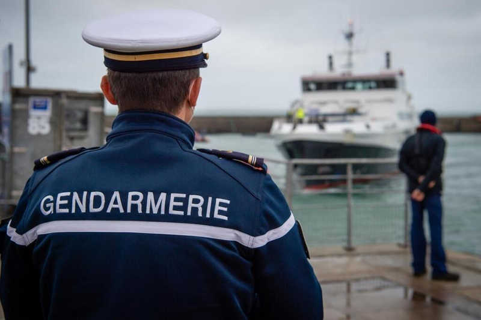

Cellule de réserve

Missions :
La cellule de réserve est en charge de la gestion de l'ensemble des réservistes du GGMARMEDI : Est en charge : - Du recrutement, - De l'emploi, - De la gestion RH, - De la formation, - De la spécialisations de certains personnels, - De la gestion du budget propre aux réservistes.
Moyens :
- Divers : - Informatique (ordinateurs, logiciels...).
Effectifs :
- 3 personnels : 1 Sous-officier, 1 réserviste, 1 colonel de réserve (Conseillé de réserve).